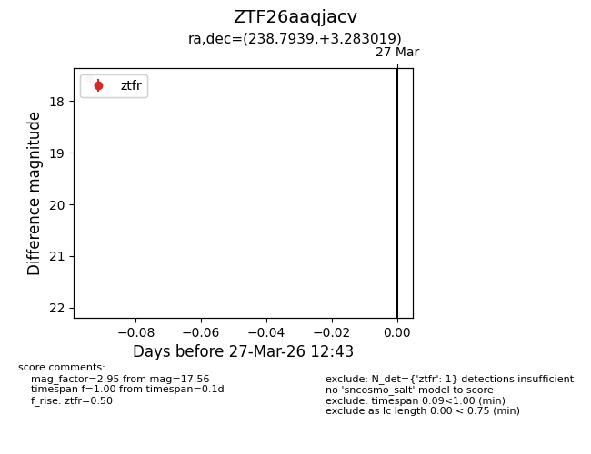
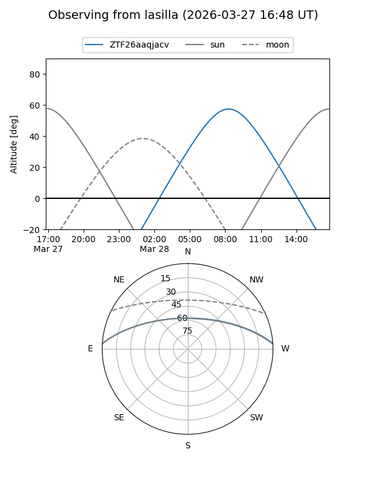
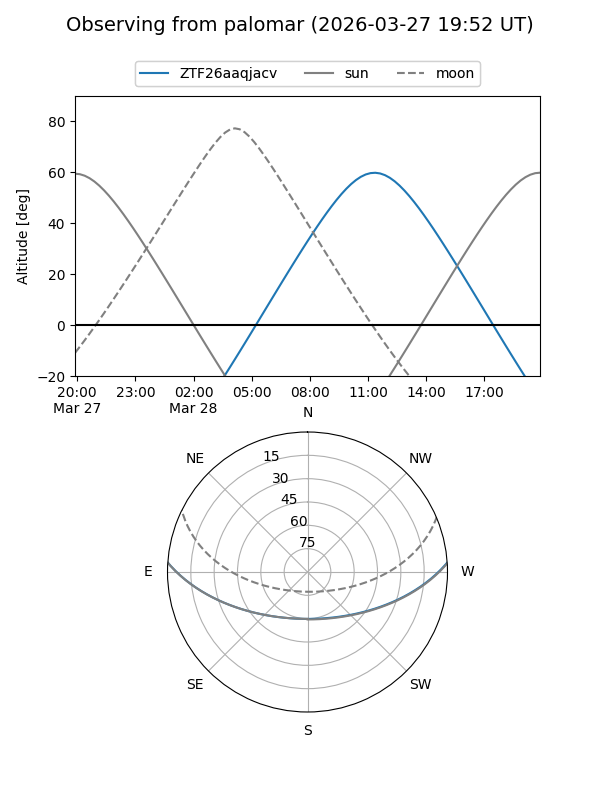

ZTF26aaqjacv
Target ZTF26aaqjacv at 2026-03-27 12:45
Aliases and brokers:
FINK: link
Lasair: link
ALeRCE: link
alt names
ZTF26aaqjacv (ztf,fink_ztf)
Coordinates:
equatorial (ra, dec) = 238.7939,+3.28302
equatorial (HMS+DMS) = 15:55:10.54,+03:16:58.87
galactic (l, b) = (12.6124,+40.09577)
Flags:
Photometry:
last ztfr=17.56
1 ztfr detections
Lightcurve

Visibility


Additional plots